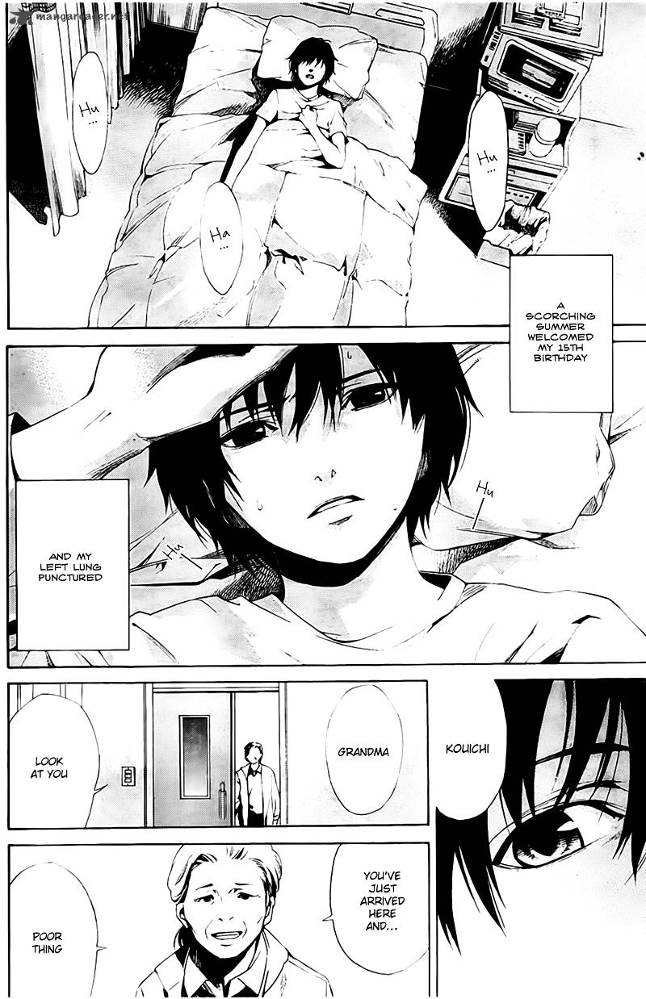

Horror
Another
by Yukito Ayatsuji
Synopsis
In 1998, transfer student Kouichi Sakakibara arrives at Yomiyama North Middle School and becomes fascinated by Mei Misaki, a mysterious girl whom his classmates seem determined to ignore. As strange deaths begin to occur around Class 3-3, Kouichi uncovers a terrifying curse connected to the class's dark past. To survive, he must discover the truth before more lives are lost.
Chapter 1

Kouichi Sakakibara transfers to Yomiyama North Middle School, where he joins Class 3-3. While adjusting to his new school, he notices Mei Misaki, a
— End of chapter —